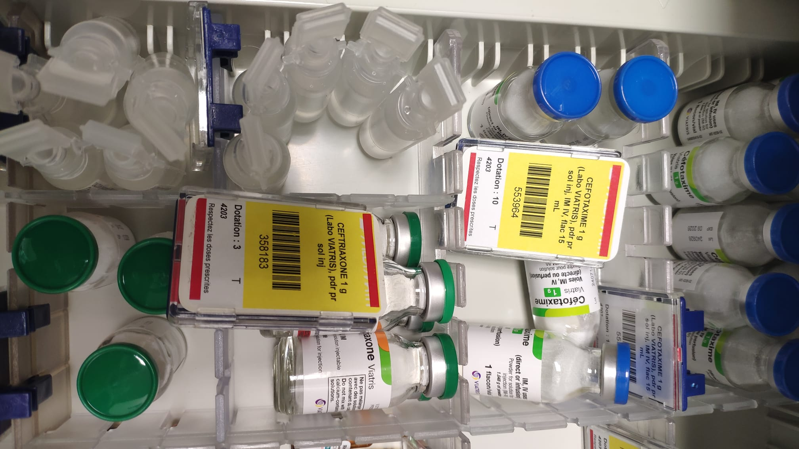
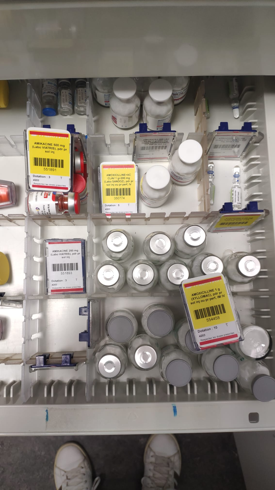

Antibiothérapie IV – Urgences Pédiatriques
Objectif
Cette page regroupe les informations, schémas, images et vidéos concernant l’administration des ATB IV en pédiatrie.
Indications
- Suspicion d’infection sévère
- Impossibilité de voie orale
- Selon protocole médical en vigueur
Images
Exemple : schéma de préparation / administration
 Vidéos
Vidéo de démonstration :